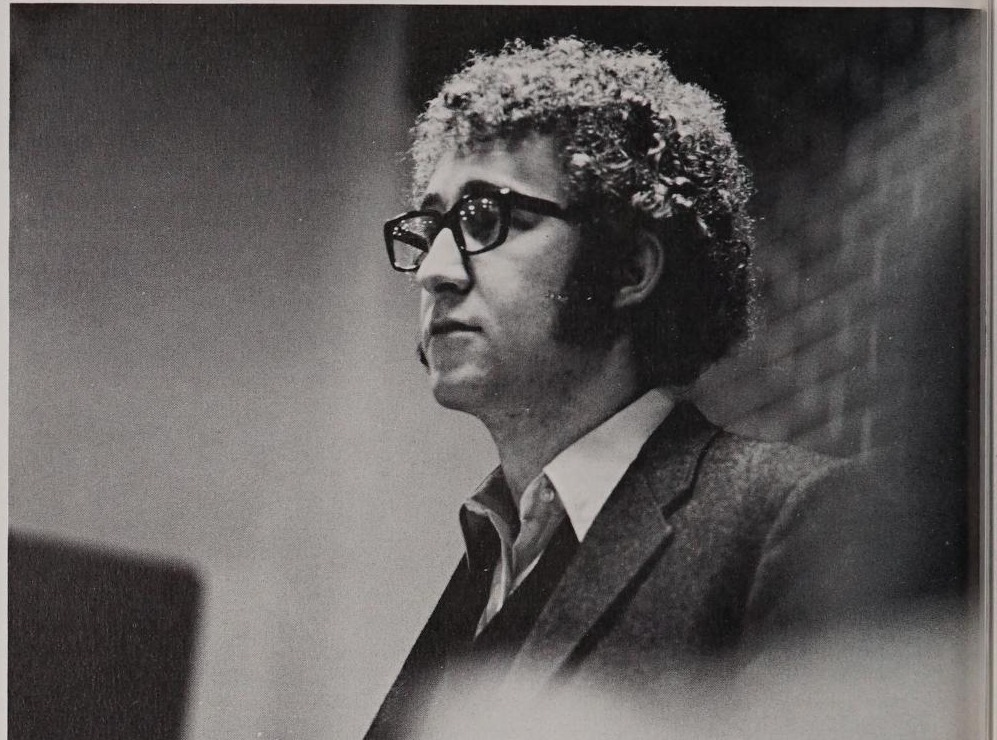
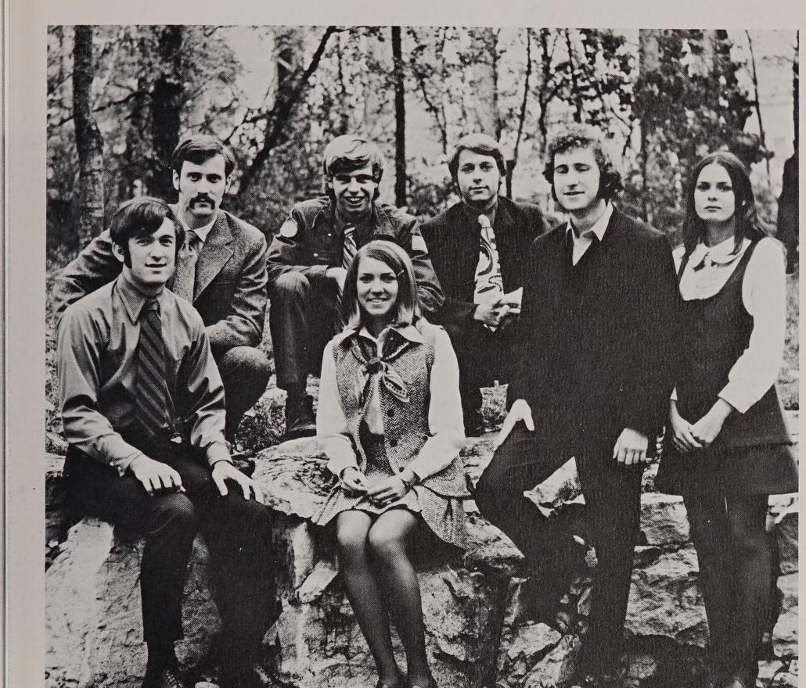

#
John Lyne wins the presidency before the race begins
No opponent filed against Lyne for the 1970-71 Associated Students presidency, and the Herald reported him elected without a contest.
Associated Students · academic year

Ran for the Associated Students' second officer spot against David Porter in the 1969 election and lost; won the presidency outright in the 1970 election, unopposed, for the 1970-71 term. The plaque's pairing with Larry Zielke under 1970-71 is wrong - Zielke's term was 1969-70; see that year.
Lyne first ran for Associated Students office in the March 1969 election, contesting the vice-presidential ('second spot') race against David Porter and losing; Porter went on to serve as Larry Zielke's vice president for 1969-70. A year later, no one filed against Lyne for the 1970-71 presidency, and the Herald reported on 13 March 1970 that he had 'won the presidency before the race begins.' Doug Alexander won the vice presidency the same election cycle, beating Steve Tichenor, in a vote held the following week.
The term began against the backdrop of the Kent State shootings that May: the Associated Student Congress's October 1970 resolution on the women's curfew ran in a Herald issue whose letters page was dominated by students arguing about Kent State, and the same fall the Board of Regents seated eight students on the Academic Council. Beyond the curfew resolution, the Congress passed a lecture bill on 6 November 1970 funding campus appearances by William Kunstler and Bernadette Devlin, and separately endorsed a proposed new constitution two weeks later; a study committee kept refining it, reaching judicial-reform provisions by February 1971.
John Lyne was one of the most visible students on the Hill before taking office, writing a steady stream of Herald columns through 1969-70 and representing Kentuckians in the national draft lottery drawing in December 1969.
Lyne won the Associated Students presidency in March 1970 without opposition, the Herald reporting that he had captured the office before the race began.
Through 1970-71 Lyne fought his administration's corner in the Herald's letters column, complaining in January that he had been kept in the dark about an appointment and defending the Associated Students lecture series against attack that April, in the issue that reported W.S. Moss taking the oath as regent.
Sources for this account
Unopposed.
Herald 49:35, 13 Mar 1970Beat Steve Tichenor.
Herald 49:39, 27 Mar 1970No opponent filed against Lyne for the 1970-71 Associated Students presidency, and the Herald reported him elected without a contest.
Alexander beat Steve Tichenor for the Associated Students vice presidency in the vote held the week after Lyne's uncontested presidential win.
An editorial framed it as the Regents opening doors to student expression in academics. Representation was arriving faster in the curriculum committees than on the board itself.
The Associated Student Congress passed a curfew resolution; the Herald reported abolition was unlikely that year and editorialised that the curfew was obsolete. The letters page in the same issue is almost entirely students arguing about Kent State.
The Associated Student Congress passed a lecture bill funding campus appearances by William Kunstler and Bernadette Devlin, and the Herald reported the Congress was drafting a new constitution.
The Associated Student Congress endorsed a proposed new constitution, continuing the reform effort launched two weeks earlier. The same issue previewed William Kunstler's scheduled Monday lecture, funded by the Congress's 6 November bill.
A committee was formed to study Associated Student constitutions, renewing the reform effort that had produced a second constitution the year before.
Resolutions gained approval in the Associated Students Congress, and the government pressed its call for a center for students in the Herald's pages.
The constitution study committee took up judicial reform provisions, the Herald reported. The same issue carried a student's published praise for William Kunstler's campus lecture.
With filing open for the spring elections, the Herald reported twenty student government offices going begging for candidates.
By election eve the field had filled out: the Herald counted 84 students seeking campus offices in Tuesday's voting.
Linda Jones was elected the first woman president of the Associated Student Government. The Western Alumnus pictured her being sworn in alongside faculty regent Lowell Harrison.
The newly elected Associated Student Congress leaders aired major issues for the Herald and gave clues on what to expect in the fall.

Every source cited above, once, with the number of entries that rest on it.
Preferred citation
“1970-71,” SGA 60: Student Government at Western Kentucky University, 1966–2026, revised 4 August 2026, y/1970-71.html
Where a name on this page differs from the plaque in the SGA Chambers, the difference is explained above and recorded on the corrections page.